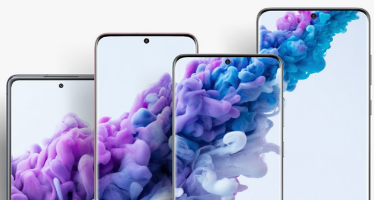
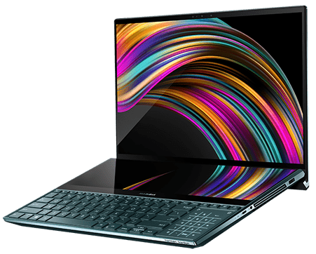

Multiples Servicios
Reparacion de Celulares, Smartphone Iphone, Samsung, Xiaomi, Huawei, Tablets, Ipad, Computadores, Portátiles, Laptop, PC.

Reparacion el mismo dia
La reparacion celulares toma de 2 a 24 horas, dependiendo del tipo de arreglo. Servicio totalmente gratis. Cobertura en todo bogota*

Ajustado a tu presupuesto
Te ofrecemos los mejores precios del mercado, adaptados a tu presupuesto. todos los medios de pago disponibles para una mayor comodidad.
Servicio Tecnico Premium
Nuestra garantía es del 100% cubre la reparación de celulares y todos los repuestos de celulares instalados. Todos nuestros técnicos son certificados ISO9001.
¿Porque somos la mejor opcion?
Contamos con mas de 10 años de experiencia en reparación y mantenimiento de celulares y equipos de computo.
+50.000 equipos reparados.
100% de nuestros clientes nos recomiendan.
Certificación ISO 9001. Servicio tecnico celulares bogota
Técnicos certificados con los más altos estándares de calidad.
Cobertura en todo bogota. Servicio Domicilio.
WHATSAPP

Servicio técnico de Computadores
Especialistas en reparación y mantenimiento de equipos de computo en bogotá.
Ofrecemos servicios con todas las marcas:
Dell, hp, lenovo, toshiba, acer, asus, sony vaio, samsung y apple.
Servicio técnico a domicilio llámanos y danos el gusto de atenderte.
+ 15 años de experiencia
+ de 20.000 computadores reparados.
COTIZAR
